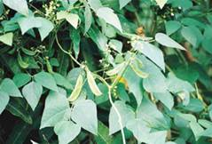
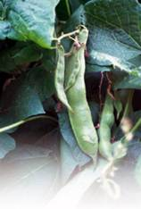
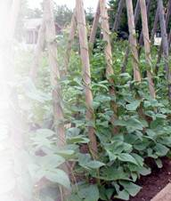
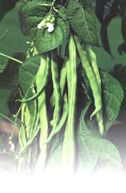

Особенности выращивания фасоли

Фасоль чрезвычайно требовательна к своим предшественникам. Нельзя размещать ее посевы на том месте, где раньше выращивались бобовые культуры.
Фасоль чувствует себя угнетенно на кислых почвах; их надо обязательно известковать, доводя показатель уровня кислотности до 6–7.
Лучшими предшественниками фасоли считаются огурцы, помидоры, капуста и картофель. Эти культуры оставляют почву рыхлой и без сорных растений.

Свежие органические удобрения вносить нежелательно; фасоль может принять навоз только через 2–3 года. Участок должен быть защищен от ветров, иметь сток для холодного воздуха. Северный склон – не самый лучший: он холодный и плохо прогревается весной и в начале лета.
Самое подходящее место для овощной фасоли – в междурядьях молодого сада.
Фасоль можно возвращать на прежнее место только через 3–4 года.
Подготовку почвы начните осенью. Для глубоко залегающей корневой системы требуется большой слой рыхлой, хорошо пропускающей воздух почвы: это стимулирует деятельность азотофиксирующих микроорганизмов. Богатые гумусом огородные участки обычно не нуждаются в органике, но минеральные удобрения под перекопку почвы следует внести обязательно: на 10 м потребуется 250–300 г фосфорных удобрений и 120–150 калийных.
Весной перекопку участка повторите. Внесение таких же доз фосфорно-калийных минеральных удобрений даст отличный эффект.
Чтобы предохранить семена от болезней, предварительно замочите их в растворе марганцовокислого калия (10 г на 1 л воды).

В таком растворе выдержите семена в течение 20 минут, после чего промойте и просушите. Для ранних сроков посева фасоль можно предварительно прорастить в теплом помещении после замачивания в марлевых мешочках.
В течение нескольких дней семена в марлевых мешочках наклевываются. Посев проводится в два срока.
В Нечерноземье первый посев можно приурочить к концу первой декады мая, когда почва прогреется до 12–14 °C на глубине 10 см. В холодные весны фасоль высевается позже на 10–15 дней.
Второй посев происходит через 10 дней после первого.
Можно выбрать самый простой способ посева: 50 см между рядами и 6–8 см между семенами в ряду. При более эффективном ленточном способе расстояние между растениями в рядах не меняется; между лентами оставляется 60 см, а между рядками в ленте – 25 см.
Глубина заделки семян фасоли зависит от плотности почвы, ее механического состава. На глинистых почвах достаточно заделать семена на глубину 2 см, на суглинках -3 см, на супесчаных и песчаных почвах – 5 см. Если почва плохо прогревается, полезно сделать гряды. Это особенно важно, когда грунтовые воды подходят к поверхности почвы.
Небольшую грядку хорошо накрыть пленкой – это ускорит процесс прорастания и улучшит развитие молодых всходов. Когда у фасоли начнут развиваться боковые побеги (примерно в первой декаде июня), пленку можно снять, но очень осторожно, чтобы не повредить молодые хрупкие стебли растений.

Над участками, где растет фасоль, установите каркасы и дуги. Шпалеры могут заменить беседки, заборы, стены хозблоков идомов. Они должны располагаться с северной стороны, чтобы н е затенять фасоль, постоянно нуждающуюся в солнечном свете.
Если вы выбрали вьющиеся сорта фасоли, надо заранее подумать о создании шпалер. Их высота должна составлять 2,5–3 м
Гораздо проще выращивать кустовые сорта фасоли. Почву следует готовить с осени так же, как было описано выше. Семена предварительно проращиваются, высеваются в бороздки, обильно смоченные водой и замульчированные торфом или перегноем. После посева грядку следует накрыть прозрачной пленкой – это позволит почве лучше прогреться. Когда наступает жаркий период, многие огородники удаляют пленку, но лучше ее оставить и только немного затенить. Можно приготовить суспензию из мела, опрыснув им пленку. Белый налет отразит избыточные солнечные лучи и создаст благоприятный тепловой эффект для дальнейшего роста фасоли. Если же мела нет, то можно воспользоваться просто болтушкой из почвы.
Агротехника фасоли несложная. Следует регулярно пропалывать посадки, уничтожать сорняки, два или три раза сделать подкормки в зависимости от плодородия почвы. После дождей и поливов следует удалять с земли корку, но аккуратно, чтобы не нарушить структуры корней, на которых размещаются поглощающие азот клубеньковые бактерии.
За один прием можно убрать весь урожай, так как он обычно созревает одновременно. Не нужно допускать перезревания и перерастания бобов, поскольку в этом случае они становятся жесткими, быстро теряя вкусовые показатели.
Когда бобы начнут созревать, не следует запаздывать с их уборкой

Схему посадки лучше использовать рядовую. Между растениями оставляются расс тояния 8-10 см между рядами 40–50 см
При хорошем уходе и своевременном выполнении основных агротехнических требований с 1 м получают в среднем около 1 кг отличной продукции.